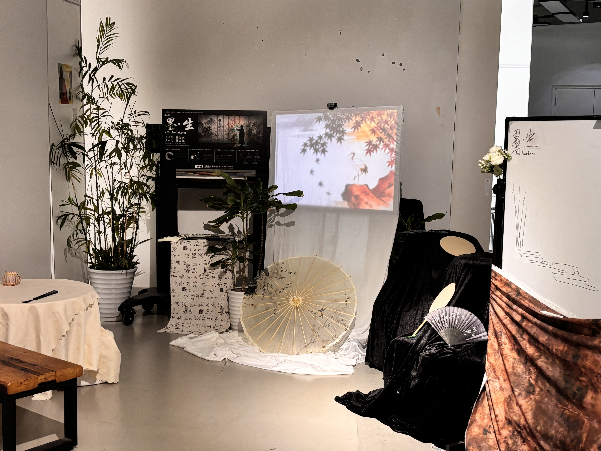
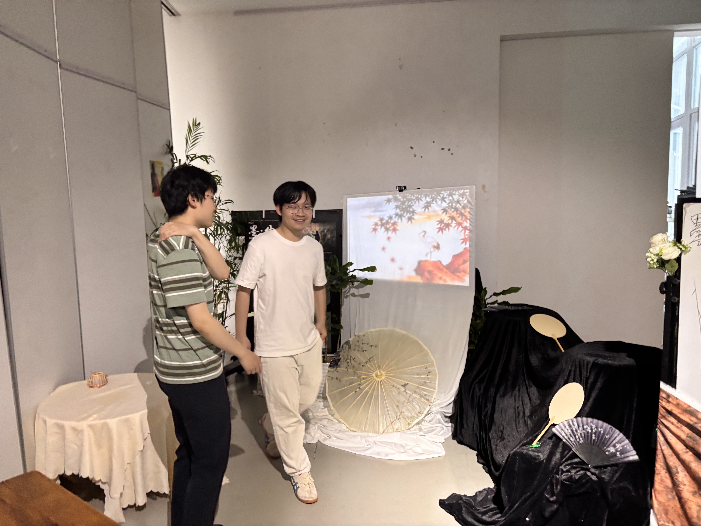
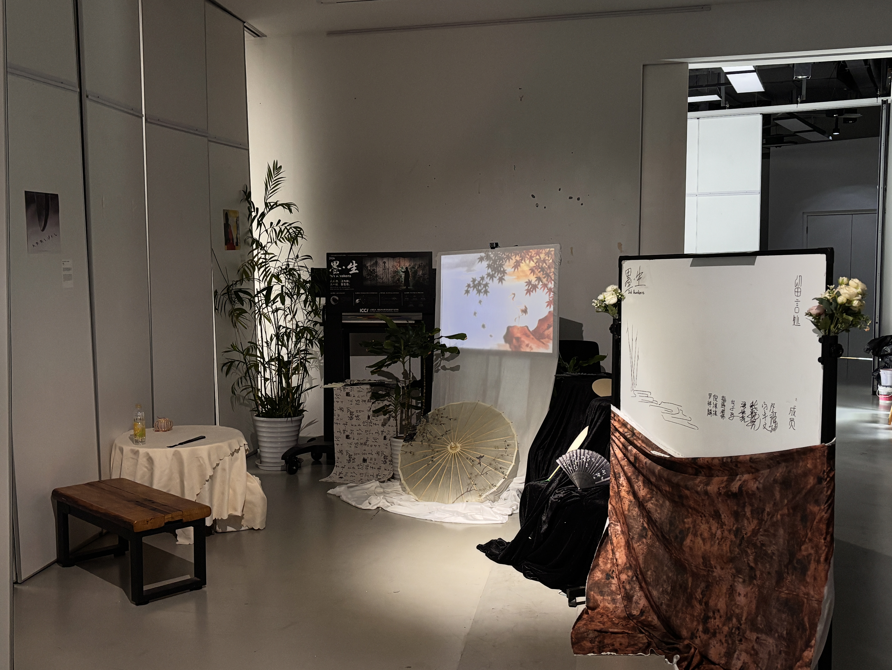
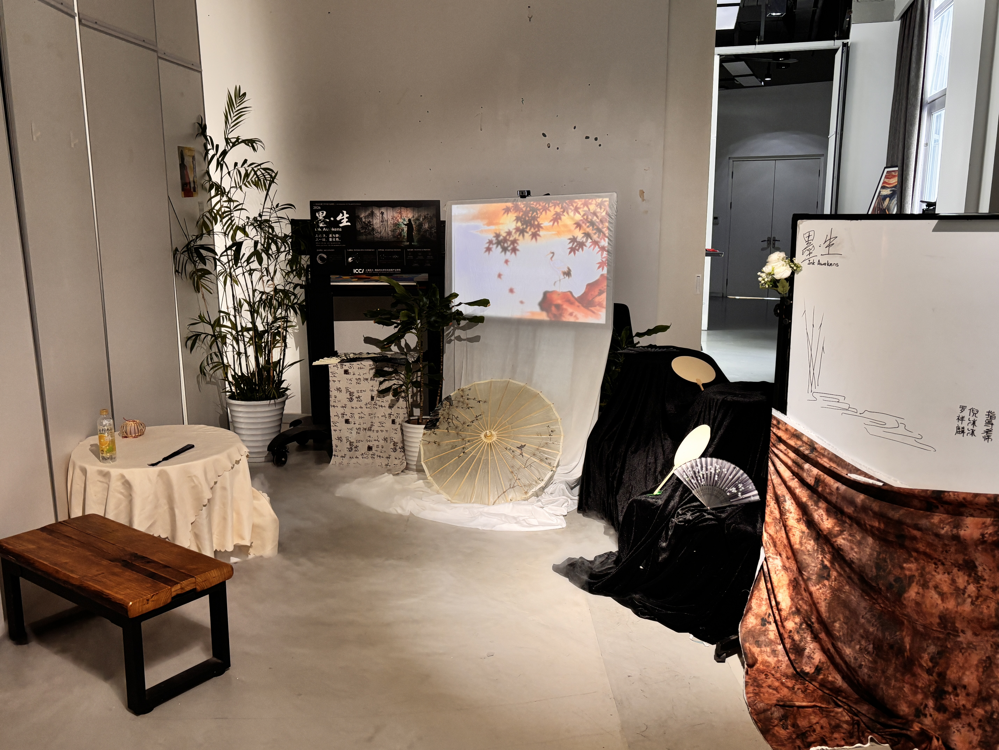
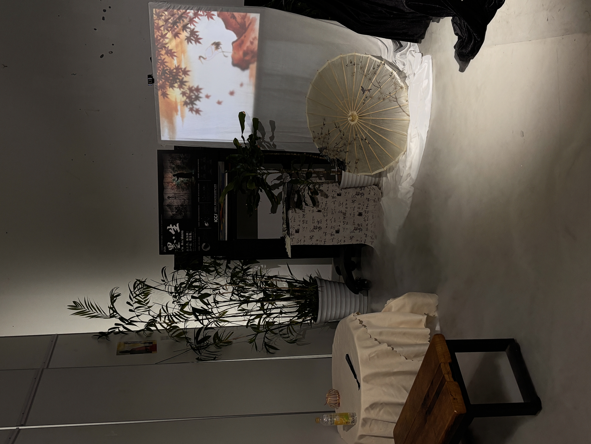
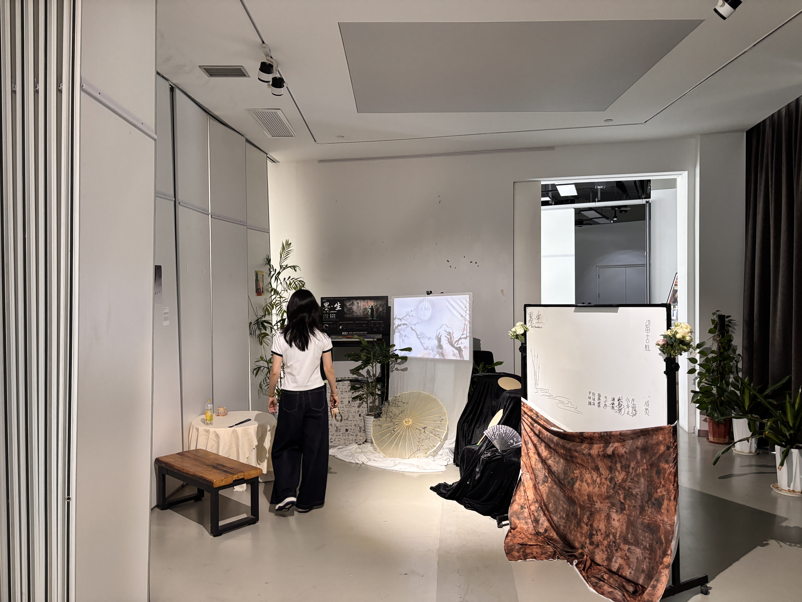
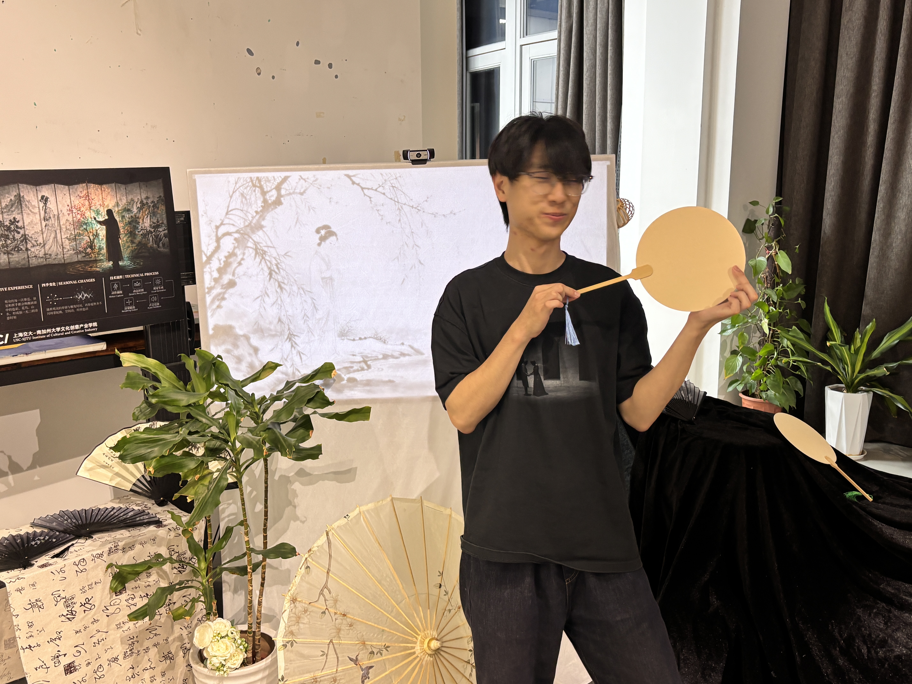
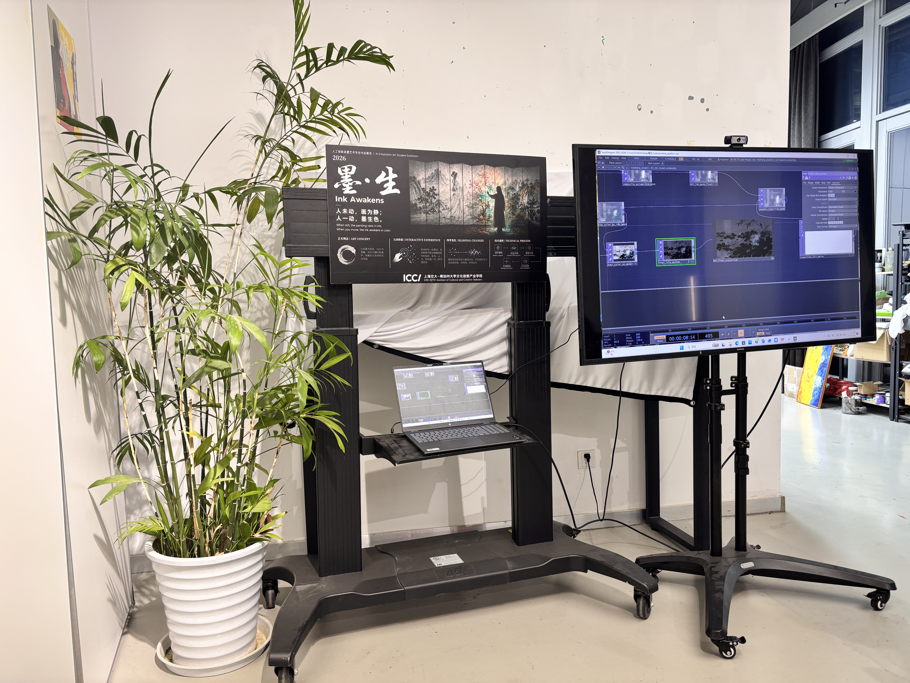

墨 · 生
交互水墨投影装置
Interactive Ink Installation
人未动，画为静；人一动，墨生色
When man is still, the painting is silent; when man moves, ink blooms










墨 · 生
感谢观看
Thank You for Watching
Interactive Ink Installation
2026
2026
00:00.00
开场
准备开始
点击「播放」开始录制
人未动，画为静；人一动，墨生色
《墨·生》背景播放器
3分钟完整版 · 录屏专用
0:00
3:00
60%
💡 录屏说明：
1. 勾选「纯背景模式」隐藏台词
2. 按 F 键全屏左侧预览区
3. 点击播放，用录屏软件录制
4. 得到3分钟完整背景视频
1. 勾选「纯背景模式」隐藏台词
2. 按 F 键全屏左侧预览区
3. 点击播放，用录屏软件录制
4. 得到3分钟完整背景视频
时间线（点击跳转）
快捷键：
空格 播放/暂停 R 重置
←→ 快退/快进5秒
↑↓ 调整速度 F 全屏
H 显示/隐藏台词
空格 播放/暂停 R 重置
←→ 快退/快进5秒
↑↓ 调整速度 F 全屏
H 显示/隐藏台词